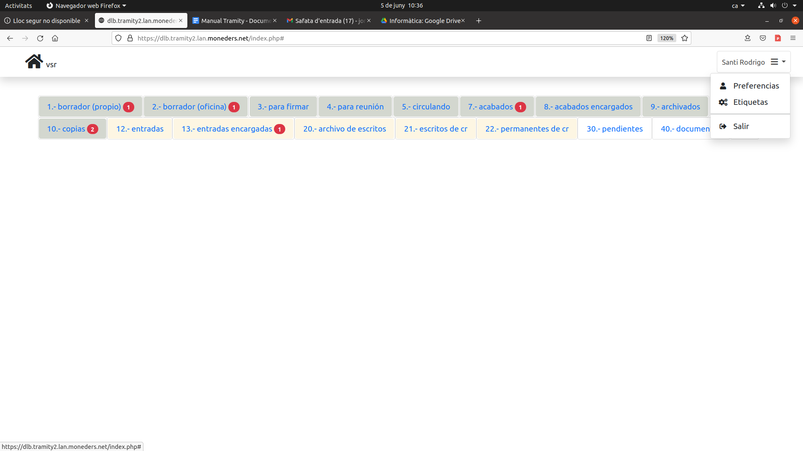
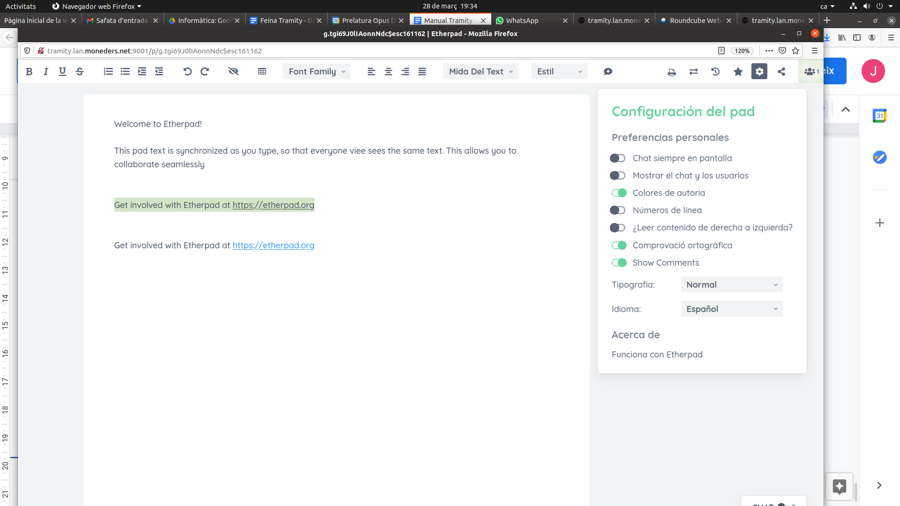

Se deja el papel y todo pasa a gestionarse en soporte informático.
Diccionario de términos básicos empleados en el manual. (Ir)
Es una aplicación web que gestiona:
Trámite y archivo de expedientes en la Delegación
Correo:
-dentro de la Delegación: entradas y salidas
-de la Delegación con los Centros (en fase de activación).
Estructurada según:
Oficinas: las de la Delegación
Cargos: cada cargo corresponde a una oficina, que tiene un titular o un suplente.
Usuarios: un usuario puede tener varios cargos; uno de ellos es el preferente.
(Los criterios de privacidad definen a qué tiene acceso cada usuario, según cargos u oficinas)
Ir a https://dlb.tramity.lan.moneders.net/index.php con usuario y contraseña (el mismo de la intranet):
Clicando sobre el nombre de usuario (arriba a la derecha) se despliega un menú:

En “Preferencias” se puede definir el color, el idioma, el mail y cambiar el password:
Cada pestaña permite gestionar un paso de un expediente que circula, o bien la entrada o salida de un escrito; u otras prestaciones. Se resalta en color más intenso la pestaña que se muestra su contenido. Junto al nombre de algunas pestañas aparece, en rojo, el número de elementos que tiene, pendientes de alguna acción.
Relacionadas con “expedientes” (fondo gris):
-Borrador (propio): expedientes propios en fase de elaboración. Iniciar un nuevo expediente.
-Borrador (oficina): expedientes compartidos de/con otros de la propia oficina. Iniciar nuevo.
-Para firmar: expedientes, de otros usuarios, pendientes de firmar
-Para reunión: expedientes, decretados para una próxima reunión
-Circulando: expedientes propios o relacionados con la oficina que están circulando
-Acabados: expedientes que han regresado a la propia oficina después de circular
-Acabados encargados: expedientes acabados, encargados a uno de la oficina para gestionar
-Archivados: expedientes guardados una vez hechas todas las acciones (enviar, etc.)
-Copias: copias de expedientes de otras oficinas, que son de interés
Relacionadas con “escritos” (entradas y salidas) (fondo amarillo):
-Entradas: Nuevos escritos recibidos y asignados a la oficina (pendientes de gestión)
-Entradas encargadas: Entradas asignadas a alguien de la oficina.
-Archivo de escritos: búsqueda de escritos a/de la dl
-Escritos de cr: correo de cr de los últimos 7 días (solo para los directores)
-Permanentes de cr: consulta de escritos permanentes (numeración baja)
Otros (fondo blanco):
-Pendientes: gestión de asuntos del registro o de la propia oficina que requieren
respuesta en fecha determinada.
-Documentos: Introducción de documentos externos a la aplicación.
Pasando el cursor sobre cada pestaña aparece un “globo” explicativo del contenido.
La presentación de todas las pestañas, como se ve a continuación, es similar:
-”mod”: modificar el expediente
-”ver”: ver el expediente
-”acción”: eliminar un expediente, copiarlo, etc.
5.- Gestión de expedientes (Borrador -> Para firmar -> Para reunión ->
Circulando -> Acabados -> Archivados)
En las pestañas “Borrador” (propio o de oficina) se muestran los expedientes que se están trabajando.
Por defecto aparecen a la vista los expedientes “normales” (los de trabajo propiamente); seleccionando “en espera” enseña los expedientes borradores que están pendientes de trabajar más adelante.
La vista, si hay muchos expedientes, se puede filtrar por “etiquetas”
Para iniciar un nuevo expediente, en “Borrador (propio)” hay que clicar el botón “nuevo expediente”. Se accede entonces a la siguiente pantalla (similar a la de “mod” o “ver” un expediente ya creado):
Hay que seleccionar:
“Trámite”: determina las personas que firmarán: ordinario, de despacho, deliberativo, etc.
“Vida”: plazo en que se borrará: normal, permanente, experiencia, temporal o borrable.
“Visibilidad”: quién tiene acceso: todos, personal, directores, reservado, vcd.
“Prioridad”: urgencia en el recorrido: normal, rápido, urgente, otro, en espera.
“Etiquetas”: Catalogación para facilitar el archivo y búsquedas.
“Asunto expediente”: identifica el expediente. Es un campo obligatorio y clave para búsquedas.
“Entradilla” [opcional: breve explicación, o para diálogo dentro de la oficina].
“Preparar” [opcional: para señalar quienes en la oficina deben preparar/ver el expediente].
El “Trámite” escogido determina la selección de firmas y el recorrido del expediente. Es importante seleccionarlo bien:
“simple ‘E-12’”: para reclamar, sin número de protocolo,...: lo firma el d y 2 personas más.
“ordinarios”: trámites sencillos: los firma el d y otros dos, y pasa a Secretaría (al menos, dos d).
“de despacho”: asuntos que pasan a estudio del vcd. Llega al vcd con tres firmas (dos de ellos d)
“extraordinarios”: asuntos que pasan a estudio del vcd con la firma de todos los d.
“voto consultivo”: pasa a estudio de la Permanente firmado por el ponente y los d afectados.
“voto deliberativo”: para el Pleno de la dl; se circula con la firma del ponente y los otros d afectados.
“comisión de trabajo”: para estudio de un grupo de directores. Se suele seguir el mismo trámite
del pleno de la dl.
“estudio previo”: para pre-circular entre varios d, antes de circular la versión definitiva.
La “vida” está pensada para facilitar el borrado de los expedientes y evitar que se acumulen innecesariamente: al cabo de pocos días, cuando periódicamente se borren todos los “borrables”, etc. Secretaría determina la duración de las opciones predefinidas. Está en fase de implementación.
Se han definido los diferentes grados de “visibilidad”, que afectan tanto a los expedientes como a los escritos (entradas y salidas):
todos: cualquier ve todo.
personal: todo accesible a los d y of de las oficinas implicadas. El resto de of solo ven el “asunto”
directores: solo ven los directores.
reservado: solo visible para los directores afectados y la permanente.
vcd: reservados del vcd.
La “prioridad” señala la rapidez con que interesa circular el expediente, señalando la fecha deseada de ejecución. Los expedientes “urgentes” aparecen en rojo en los listados.
En “otras firmas” no hay que incluir al scdl, vcsd, sd y vcd cuando ya les corresponden por el trámite, pues se les asigna automáticamente. De lo contrario se les obliga a firmar dos veces.
“Guardar”: pregunta si se quiere añadir escritos o adjuntos. En caso afirmativo, presenta la siguiente pantalla:

Hay varias zonas diferenciadas:
Parte superior izquierda: los datos básicos del expediente
Parte superior derecha: Antecedentes: aquí estarán todos los antecedentes del expediente.
Parte inferior: listado de todas las acciones que contiene el expediente: propuestas, escritos, etc.
Haciendo click en los botones correspondientes podrán añadirse Antecedentes:
Entradas: escritos recibidos (que estén en el registro del Tramity)
Expedientes de la oficina
Escritos enviados (seleccionados desde el registro del Tramity)
Documentos: documentos externos al Tramity (Word, Excel, PDF, fotografía, etc).
Y además:
nueva propuesta: la propuesta propiamente dicha (textos explicativos, ...).
plantilla: formularios predefinidos por Secretaría para determinados trámites
(conceder una o, ...).
nuevo escrito: generar un escrito para enviar.
contestar entrada: generar un escrito en respuesta a otro.
Tanto para “nueva propuesta” como para “nuevo escrito” o “contestar entrada” se abre una página así (en el primer caso no aparecen “Destinos” ni “Referencias”):
“Asunto” (obligatorio) y “Detalle” (opcional) identifican la propuesta o el escrito.
En el caso de escritos se debe seleccionar el Destino (o grupo de envío) y las Referencias (si las hay).
También cabe especificar la Categoría (normal / sin numerar / permanente) y la Visibilidad (todos / personal / reservado...).
“Visibilidad en destino”: para señalar si el escrito va dirigido a todo el cl o solo al d, o al d y sacd.
“¿El centro debe contestar?”: para indicar el pendiente que Tramity generará en el ctr de destino.
“Guardar”: pregunta si se quiere añadir escritos o adjuntos. En caso afirmativo, presenta la siguiente pantalla (similar tanto para propuestas como para escritos):
“Fecha del escrito”: aunque no es obligatorio, si no se introduce, lo recuerda un mensaje.
“Insertar escrito”: para introducir el contenido propio del escrito o propuesta mediante el editor de texto colaborativo “Etherpad”. Con “Nuevo Etherpad” abre un documento en blanco; con “Buscar en Documentos” presenta los etherpad guardados para seleccionar el deseado (el “Etherpad” se explica más abajo).
Los adjuntos: para introducir documentos externos a la aplicación. Con “Buscar en Documentos” para adjuntar los introducidos previamente. Si no se han introducido antes basta con arrrastrarlos o seleccionarlos con el botón “Browse…”.
Hay que circular cada escrito con los destinos concretos a los que irá. Hay tres tipos de destinos:
Destinos individuales: se seleccionan a través del menú desplegable, cuantos se quiera.
Grupos predeterminados: grupos más habituales ya predefinidos por secretaría. Se seleccionan marcando “Grupo” en “Destinos”, y seleccionando el correspondiente. [Si alguno, de uso habitual, no está definido por secretaría se puede avisar para que lo incluya].
Grupos especiales: definidos por la oficina ad casum. Se marca “Grupo” en “Destinos”, se selecciona el grupo que más se ajuste ajustar (o ninguno) y se marca “Guardar”. Vuelve a abrirse el escrito -”mod.datos”- y se clica “modificar selección”, que abre un listado completo para marcar o desmarcar los destinos que corresponda.
Antes de “Guardar” interesa anotar una “Descripción” del grupo que facilite su identificación en los diferentes listados.
Plantilla: El proceso para añadir una plantilla a un expediente es el siguiente:
Se selecciona “plantilla” en el expediente:

Se escoge la plantilla deseada con “adjuntar” (si se duda, antes de “adjuntar”, se puede “ver”):

Se completan los datos:

Y se cierra el Etherpad para circular:

UN EXPEDIENTE CON UNA PROPUESTA Y VARIOS ESCRITOS SE VERÁ DEL SIGUIENTE MODO:
Para cada una de las propuestas o escritos pueden modificarse todos los datos (mod.datos), revisar el texto (rev.texto), manipular los adjuntos (doble clic en el clip), o “eliminar” ese escrito o propuesta.
“Preparar”: sirve para que un expediente puedan trabajarlo, antes de circular, otros de la oficina. Si se marca, el expediente aparecerá en la lista de “borrador (oficina)” de los d y of de la oficina que se hayan marcado. La marca (“checkbox”) indica que el oficial o director debe mirarlo, NO que lo ha visto.
-Cuando un expediente ya se ha visto, hay que hacer click en “marcar como visto” (si se vuelve a clicar se desmarca): aparecerá entonces, junto al cargo y entre paréntesis “visto” en color verde. El expediente desaparece de la lista de “Borrador (oficina)”.
-Cuando todos los que deberían ver un expediente ya lo han visto (marcado “visto”), en la ventana “Borrador” del ponente aparecerá resaltado en color amarillo, para indicar que ya puede proceder a circularlo.
-Tiene interés utilizar la opción de “preparar” cuando se prevé que el expediente tendrá variaciones en la propia la oficina antes de circular. Cuando el expediente ya está circulando es más limitada la posibilidad de hacer cambios.
“Circular”: Para pasar a firmas cuando el expediente ya está listo. Seguirá el recorrido según el trámite y la selección de firmas.
“preparar” y “firmar” son cosas diferentes. Si se quiere que un oficial, además de preparar un expediente, lo firme, habrá que marcarlo en “preparar” y seleccionarlo también en “firmas oficina”. Esto será lo habitual. En “firmas oficina” no aparece el director, porque a este, por defecto, ya le llegan para firmar todos los expedientes de la oficina. No es necesario añadirlo como firma.
Al añadir los cargos que deben firmar, se distingue entre los de la oficina, primero, y el resto, después. Hasta que no han firmado todos los de la oficina (además del director de la oficina), no pasan a verlo los demás a firmar.
El cargo que pone a circular un expediente, firma automáticamente con su nombre. El expediente desaparece de la lista de “borrador” y aparece en la de “circulando”.
(más adelante se explica cómo queda la plantilla de un expediente tras circular y aprobar)
En esa pestaña aparece el listado de expedientes a firmar. En rojo se indica el número de expedientes. En negrita se señalan los que todavía no se han visto. Una vez firmados, desaparecen de la lista.
Pulsando “revisar” se accede al correspondiente expediente:
-En la parte superior aparecen los detalles del expediente:
(izquierda): ponente, tipo de trámite, estado, oficinas
(derecha): prioridad, fecha de resolución
(a continuación): Asunto, Entradilla, comentarios
-En la parte inferior aparecen las diferentes propuestas/escritos que se pueden ver/revisar(*), y los adjuntos, que se pueden descargar para ver y modificar, haciendo doble clic en el clip (**).
-En la parte derecha aparecen:
Antecedentes, que se pueden ver y descargar. (***)
Firmas (Firmar / Añadir firmas: se pueden “Añadir firmas” si así se considera oportuno). (****)
Recorrido seguido hasta el momento.
(*) Con el link de “revisar” se tiene acceso al texto del escrito, que se puede modificar, hacer comentarios etc. Lo que se anota, queda registrado al instante; no hace falta guardar. (Para más información ver la explicación de uso del “Etherpad”).
(**) Para ver un adjunto, hay que descargarlo y abrirlo.
También se puede modificar. En este caso, como el archivo se habrá guardado en el disco duro del ordenador (en principio, en la carpeta “descargas”), al final hay que “arrastrarlo” de nuevo a la ventana de los adjuntos y eliminar la versión anterior.
(***) Con “ver todos” se genera un pdf con todos los antecedentes que están a la vista y los incluidos dentro de los expedientes puestos como antecedentes.
(****) También se puede “Re-circular” el expediente. Se borrarán todas las firmas y comentarios, y volverá a la pestaña “Para firmar” del ponente.
Al pulsar “firmar” el expediente (botón verde) se abre la siguiente ventana:
-Escoger el voto (ok-no-espera) y marcar “Guardar”
(Votando ok/no el expediente sigue su recorrido. Votando “espera”, sigue en la lista “para firmar”).
-Antes de votar puede añadirse un comentario o pedir una aclaración al ponente (anotando la duda en “comentario”).
Si se pide aclaración, también sigue en la lista “para firmar” pero con color amarillo, y aparece de nuevo en la vista “para firmar” del ponente; también en color amarillo.
Cuando éste responde la aclaración, el expediente cambia a color verde, señalando que ya ha respondido; de manera que ya se puede volver a abrir para firmar.
Para responder a una petición de aclaración hay que pulsar el botón “responder aclaración”; no al “OK” y “Guardar”, porque en este caso quien pregunta no advertirá que se le ha respondido.
“Cerrar”: sale del cuadro de diálogo sin hacer nada.
El voto emitido quedará registrado en la lista de firmas, así como los comentarios y aclaraciones, que serán visibles para todos.
Vista al pedir aclaración al ponente (amarillo):

Vista tras la respuesta del ponente (verde):
En esa pestaña aparecen los expedientes que cuentan con el VºBº del vcd para una próxima reunión: reunión del Pleno, comisión de trabajo, etc. Los que están pendientes de firmar aparecen resaltados en amarillo.
Para firmar se sigue el mismo procedimiento que en la pestaña “Para firmar”. Una vez firmados pasan a estar con fondo blanco.
El programa exige la firma también de los expedientes que uno ha sido el ponente y que ya firmó al iniciar el trámite. Es un modo de advertir los comentarios que pueda haber y tenerlos en cuenta en la reunión del Pleno.
En esa pestaña se puede hacer un seguimiento de los expedientes que se han puesto a circular o se han firmado como oficina implicada,, hasta que terminan su recorrido: quiénes han firmado, comentarios, etc.

En el listado de los oficiales aparecen los expedientes que ha circulado cada uno. En el del director todos los de la oficina; no solo los suyos.
Hay un “agujero negro”: los expedientes dejan de verse cuando ya han terminado el recorrido de firmas y pasan a Secretaría para distribuir. Por tanto, si el expediente “desaparece” es señal de que ya ha pasado a Secretaría y lo distribuirá en breve.
En el listado “Acabados” del director aparecen todos los expedientes de la oficina que ya han terminado su trámite (aprobados por el vcd, etc).
Corresponde a la oficina preparar y enviar los escritos aprobados, ejecutar lo que se ha propuesto, etc.

El color amarillo de algunos expedientes indican que ha habido alguna anomalía: que se ha rechazado, se dilata la decisión, etc.
Con “mod” (o “ver”) se accede al contenido del expediente; con “acción” se puede mover el expediente a “borrador”, o pasar a “borrador” una copia del mismo.
Pulsando “mod” en un expediente se accede a la siguiente vista:

Con “ver” se puede ver cada texto y con “revisar” modificarlo, ver las anotaciones y correcciones, etc.
En “mod.datos” se ajustan los datos del escrito que se ha de enviar, según se detalla a continuación.
Una vez preparado el escrito a enviar, se pulsa “pasar a secretaria” en la columna “enviar”.
Una vez enviado a secretaría ya no se pueden modificar los datos, y en la columna “enviar” aparece el texto “en secretaría”.
Cuando secretaría lo envía, el mensaje que se puede leer es del estilo: “enviado el 4/01/2021”. Hasta que no consta que secretaría ha enviado el escrito, el expediente no se puede “archivar”; es una medida de seguridad para evitar que un escrito quede perdido, sin enviar al destinatario.
Las diferentes opciones de envío de escritos determinan el modo de ajustar los datos del escrito:
Escrito con destinatario único: se revisa el escrito (“revisar”) y se envía a secretaría (“pasar a secretaría”)
Mismo escrito para los diferentes destinatarios (que se han anotados individualmente o como grupo): también se revisa el escrito (“revisar”) y se envía a secretaría (“pasar a secretaría”); a cada ctr se enviará el mismo escrito con el encabezado del propio ctr.
Modelo de escrito que se ha de ajustar a cada destinatario:
Pulsando en “mod.datos” aparece la siguiente pantalla:

Clicar el botón rojo “Explotar en un escrito para cada ctr”
Automáticamente, en la ventana del expediente, se multiplicará el escrito, uno por cada destino, con el mismo número de protocolo. Clicando “revisar” en cada uno, se ajusta el contenido del escrito para cada destino. Para simplificar este trabajo, antes de “explotar en un escrito para cada ctr” interesa ajustar el texto lo más que se pueda para evitar los múltiples ajustes en cada “copia”.
a continuación ya se puede “pasar a secretaría” cada uno, según interese.
Se puede encargar el acabado final del expediente a algún oficial (selección en “Encargar a” y botón “Encargar!”. Una vez encargado, el oficial señalado pasa a ser el ponente del expediente, y le aparecerá en la lista de la pestaña “acabados encargados”: así sabe que tiene que gestionarlo él.
Un expediente que ya está “encargado” se puede “encargar” a otro de la oficina, pero no “desencargar” a nadie.
En los escritos, junto al botón “Guardar” aparece un checkbox “revisado”, para poder marcar si ya se ha revisado, y que aparecerá marcado en la primera columna (“ok”) del listado de escritos y propuestas del expediente. Así se facilita archivar el expediente sin que queden acciones pendientes.
Cuando se ha revisado un escrito y se clica la casilla “enviar”, el escrito pasa a la pestaña “Enviar” de Secretaría para proceder a su envío; así queda señalado en esta misma casilla.
Si no se ha hecho antes, en esta fase también se pueden asignar unas etiquetas al expediente para facilitar posteriores búsquedas una vez esté ya archivado. Se recomienda hacerlo, pues es la clave para localizar después los expedientes. Las etiquetas pueden ser personales o de la oficina. Se definen en el menú de preferencias del usuario (arriba a la derecha):
Como ya se ha dicho, no se permite “Archivar” un expediente hasta que todos los escritos han sido “enviados” (no que están “en secretaría”), pues cabe que no se envíe por algún motivo y se devuelve a la oficina. En este caso, el expediente en “Acabados” aparece en amarillo, e indica que ha habido alguna incidencia:
Haciendo “mod” en el expediente se verá en el escrito correspondiente “devuelto” en rojo:
Al abrirlo -”mod.datos”- se leerá un mensaje en rojo indicando el motivo de la devolución:

Después de corregirlo, se ha de volver a pasar a Secretaría para enviar.
Pulsando “Archivar”, el expediente pasa a la pestaña “archivados”:
Ahí se ven todos los expedientes de la oficina. Cada uno ve los que le corresponden según los permisos que tenga (reservado, etc).
-Quedan clasificados por las etiquetas, tanto personales como de la oficina.
-La selección se acota escogiendo etiquetas (una o varias, y/o), por un período de tiempo o por alguna palabra clave del Asunto.
-Se recomienda no usar etiquetas personales para el archivo de expedientes de la oficina, pues no las podrían ver las otras personas de la oficina.
-Las etiquetas pueden cambiarse siempre que se quiera.
A través de “acción”, los expedientes se pueden pasar/copiar a la carpeta “borrador” o también a la de otro cargo. Todas las propuestas y escritos del expediente pasarán a ser antecedentes.
Para borrar un expediente en “Acabados” o “Acabados encargados”, primero hay que pasarlo a “Archivados” y de ahí a “Borrador” para eliminar. Antes de eliminarlo, pedirá confirmación. Se ha pensado así para evitar eliminar expedientes de modo involuntario.
Expedientes con “plantillas”
Un expediente con plantillas que ha circulado acaba así:

Al aprobarse se ha asignado un número de protocolo al escrito, que también se anota en la plantilla. Para hay que hacer “revisar” o “ver”. Si hace “ver” se abre una nueva ventana con el contenido:
Aparecen todas las firmas y el número de protocolo.
En esta pestaña, que solo ven los Directores, aparecen las nuevas entradas de escritos asignados a la oficina pendientes de gestión.
Se distinguen en dos pantallas los escritos “propios” del resto en los que no se es oficina principal.
Pulsando en “ver” se abre una ventana con una vista rápida del escrito. Puede descargarse en pdf; o bajar el propio escrito o los adjuntos que tenga en su formato original.

La opción “acción”, tanto en la pantalla de “escritos propios” como en “resto” muestra esta vista:

Esto permite:
Encargar la entrada a alguien de la oficina, que pasará a su pestaña “entradas encargadas”:
Marcar como visto: la entrada desaparecerá del listado
Añadir la entrada a un expediente existente en “borrador”
Crear un nuevo expediente en “borrador” con esta entrada de antecedente.
Crear un pendiente de la oficina y encargarlo a alguien de la oficina:

Poner Etiquetas a la entrada, para facilitar la búsqueda posterior del escrito.
En esta pestaña se ven las entradas que el d correspondiente ha encargado a alguien de la oficina.
El d de la oficina tiene un desplegable para ver el listado correspondiente a cada of. Son las entradas que ha de gestionar cada uno.
Los botones “ver” y “acción” son los mismos que para la vista de “Entradas”.
El botón Encargar a permite cambiar la persona encargada.
Las pestañas “Entradas” y “Entradas encargadas” con sus opciones correspondientes se han pensado para facilitar la gestión de las entradas y distribución del trabajo, de manera que no quede indefinida la gestión de ninguna entrada:
Determinando quién se encarga de gestionar lo que corresponda
Generando expedientes de trabajo con esa entrada
Creando pendientes que faciliten determinar plazos y el seguimiento de la tarea.
La presentación inicial de esta página sirve para buscar un escrito (entrada/salida) o un formulario:
Para “buscar un escrito concreto”, basta con escribirlo en la ventana correspondiente (o escogiendo el protocolo, número y año) y pulsar “buscar”.
Pulsando en “ver todas las opciones” se abren todas las posibilidades de búsqueda:


Permite la búsqueda de:
Los escritos de un Centro / dl / r
Por una palabra del Asunto o Detalle
Búsqueda de escritos por origen o destino
Búsqueda de entradas por “etiquetas”
Otras búsquedas más habituales
Modelos jurídicos firmados por el vcd (de incorporaciones, traslados, etc)
Por defecto busca escritos de los ctr “activos”. Si se quiere que busque en los “anulados”, hay que marcar el recuadro correspondiente.
El resultado de una búsqueda tiene una presentación del tipo:
Las opciones para cada escrito que se selecciona, son:
“detalle”: modificar o introducir el “detalle” del escrito, según el interés de la oficina.
“ver” el escrito
“acción”: Para añadir/crear un expediente, crear un pendiente o marcar con “etiquetas”:

“ver destinos” para ver los destinos concretos de escritos enviados a un grupo (p.e., “ctr de n”)
Para la tabla en su conjunto, las opciones son:
“Copy”: copia la tabla, para poder pegar en un documento.
“Excel” / “PDF”: Exporta la tabla en un excel / pdf.
“Column visibility”: Selecciona las columnas que quieren verse en la tabla.
“Print”: Imprime la tabla
Presenta a los Directores los escritos de cr recibidos los últimos días, similar a pestaña “Entradas”.

Para cada escrito, permite:
“detalle”: modificar o introducir el “detalle” del escrito, según el interés de la oficina.
“ver” el escrito
“acción”: Para añadir/crear un expediente, crear un pendiente o marcar con “etiquetas”:
“ver destinos” para ver los destinos concretos de escritos enviados a un grupo (p.e., “ctr de n”)
Para la tabla en su conjunto, las opciones, ya comentadas en el apartado anterior, son: “Copy”, “Excel”, “PDF”, “Column visibility” y “Print”.
Presenta todos los escritos de cr de numeración baja (u otros permanentes) de modo similar a las pestaña “Escritos de cr”.

Permite la búsqueda de un escrito, por oficinas, años o por palabras claves.
Gestiona los pendientes del registro (asignados por Secretaría en relación con escritos) y de la oficina (tareas a cargo de la propia oficina).
Es la pestaña que presenta Tramity cuando se accede:
En la presentación inicial de pendientes se selecciona “registro” en el desplegable “De:”. Es la opción por defecto.
Mostrará los pendientes de contestar según el registro a fecha de hoy. [Un pendiente con fecha de vencimiento “hoy”, se considera pendiente a partir de “mañana”; por eso no aparece “hoy” en este listado].
Se puede filtrar el listado por el período y por asignación. Y hacer una búsqueda más selectiva en la casilla “Search:”
Cada pendiente se puede “marcar como contestado” y “modificar”.

De cada pendiente puede verse: Protocolo de origen, si es periódico o no, Asunto, Fecha de plazo, Oficinas implicadas y Calendario. También las columnas que asigna la propia oficina: Etiquetas y Encargado.
Los pendientes se dan por contestados automáticamente cuando se envía la respuesta.
No es extraño que Tramity no sea capaz de identificar que se ha contestado un asunto (o porque no se contesta exactamente con esa referencia, o se contesta dentro de otro escrito, o de palabra o, simplemente, porque no se ha de contestar). Para estos casos: cada oficina marca la casilla correspondiente y, al hacer click en “marcar como contestado”, se da por contestado.
Si se pulsa “modificar” un pendiente no periódico aparece la siguiente ventana:
Cada oficina puede introducir modificaciones:
-etiquetarlo
-cambiar la fecha de plazo
-asignarlo a alguien en concreto
-poner en el campo Observaciones los comentarios que sean de interés para la propia oficina.
Los pendientes del registro, aunque los gestiona Secretaría, son de interés exclusivo para el trabajo de la propia oficina.
Se recomienda vivamente ver, por lo menos al principio de cada semana, los pendientes. Es el modo de dar por contestados alguno que no ha advertido la aplicación y, fundamentalmente, prever las tareas pendientes para cumplir con los plazos establecidos en los diferentes envíos.
En la presentación inicial de pendientes se selecciona “oficina” en el desplegable “De:”

Como en los del registro, se puede filtrar el listado por el período y por asignación. Y hacer una búsqueda más selectiva en la casilla “Search:”
Cada pendiente se puede “marcar como contestado” y “modificar”. También eliminar.
Al clicar “nuevo” aparece la ventana que permite crear un nuevo pendiente (si no aparece el botón “nuevo”, hay que pulsar en “listar” para que refresque la pantalla):
Presenta los parámetros básicos para definir un pendiente. Rellenando estos campos y pulsando “Guardar” se crea el pendiente para la oficina correspondiente.
Si se quiere generar el pendiente con más opciones (p.ej., con ref. a un escrito, añadir otros comentarios, etc) pulsar en “ver ficha completa”. Aparece la siguiente pantalla:

“protocolo o referencia”: permite seleccionar el escrito que está relacionado con el
pendiente. Al identificar el escrito, se añaden automáticamente los datos del pendiente: asunto, oficinas,...
“¿con quién es el pendiente?”: se selecciona el afectado (no tiene porqué ser el mismo del
protocolo)
“Observaciones”: para anotar detalles de interés para la oficina
“Visibilidad”: define quién puede verlo (todos / personal / reservado / vcd)
“estado”: la situación del pendiente (iniciado / acabado / en proceso /
cancelado)
“fecha acabado”: aquella en la que termina el pendiente
Finalmente, pulsando el “ver ficha sencilla” se vuelve a la presentación reducida del pendiente.
REPETICIONES PERIÓDICAS:
Si se quiere generar un pendiente periódico (que se repita cada “x” tiempo) hay que pulsar en “ver periodicidad” (mostrará un aspecto similar a “ver ficha completa” con el añadido de la periodicidad):
Si se selecciona Repetición “anual” aparece:

Permite fijar el período de vigencia del pendiente (“desde” - “hasta”) y concretar la repetición:
-anualmente: una sola vez al año (empezando por el día del inicio)
-Un(os) día(s) concreto(s) de un mes seleccionado
-Un día de la semana de determinado mes
-Hacer la selección por días de meses cada “x” años
Si se selecciona Repetición mensual aparece:
Se puede seleccionar el período de vigencia (“desde” - “hasta”)
-mensualmente: cada mes a partir del día del inicio.
-Días fijos de cada mes
-Un día concreto de la semana.
Si se selecciona Repetición semanal aparece:
Además del período de vigencia (“desde” - “hasta”) se puede seleccionar:
-semanalmente, a partir del día del inicio.
-Un(os) día(s) concreto(s) de la semana.
Si se selecciona Repetición diaria aparece:

Esta pestaña presenta la herramienta para gestionar la introducción de documentos en Tramity, tanto para archivo como para uso inmediato en un expediente. Su función es la equivalente a las carpetas de archivos de documentos. Está pensada para sustituir las tradicionales carpetas de archivo y tener la documentación en un único entorno de trabajo: tramity.
Una vista de la pestaña es:
Para que muestre el listado hay que seleccionar alguna etiqueta y pulsar el botón “ver lista”. Si no se recuerdan las etiquetas, puede pulsarse el botón “ver todas” y presentará el listado de todos los documentos. La selección se puede ajustar con la ayuda de diferentes etiquetas, “y/o”.
Los documentos que son “etherpad” se pueden “editar” o “ver datos”, para cambiar los detalles:

Puede modificarse el nombre, cambiar las etiquetas (una o varias), o la visibilidad.
La visibilidad es oficina/personal, según puedan verlo todos los de la oficina o solo el d.
Al pulsar el botón “etherpad” en “Ver escrito”, se abre el etherpad para modificar.
Son los documentos que no son etherpad, y que, propiamente, se “incrustan” en la base de datos para archivo y tratamiento.
Del listado correspondiente se pueden “descargar” o “ver datos”. La vista, en este caso, es:
En la ventana de la parte derecha se “incrusta” el documento arrastrándolo o buscándolo con el botón “Browse…”. También puede descargarse o borrarse.
Al pulsar “Nuevo documento” en la pestaña “Documentos” se abre la siguiente ventana:

Los campos son los ya explicados.
En insertar escrito hay que
escoger entre “Etherpad” o “Incrustado”. En el primer caso
abre un etherpad; en el segundo la ventana de diálogo para incrustar
el documento.
Los documentos de la pestaña “40.- Documentos” se pueden colocar en los expedientes:
como “antecedentes” del expediente (botón “Documentos” en Antecedentes): documentos para información, y por tanto no modificables al circular;
como texto propiamente de la propuesta o escrito(s), en “Insertar etherpad” (botón “Buscar en documentos”);
como “adjuntos” a las propuestas o escritos -botones “nueva propuesta”, “nuevo escrito”, “contestar entrada”-, que se podrán modificar y anotar, antes de enviar, si procede (botón “Buscar en documentos”)
Los documentos que se adjuntan como “antecedentes” en un expediente, siempre siguen en la pestaña de “40.- Documentos” independientemente de la evolución que tenga el expediente. Si éste, al final del proceso, se elimina, el documento seguirá en la pestaña de “40.- Documentos”.
En cambio, los documentos que se añaden en las propuestas o escritos de un expediente, pueden conservarse en la pestaña “40.- Documentos” o no. Al marcar “adjuntar” en el documento seleccionado, se abre un cuadro de diálogo que pregunta si se quiere “Adjuntar una copia” del documento (en “40.- Documentos” seguirá el documento original) o “Adjuntar” el documento (se quita de “40.- Documentos” y pasa a la propuesta o escrito).
Si el documento se copia, serán documentos distintos; o sea, que si se modifica o elimina el documento de la propuesta o escrito, la copia en “40.- Documentos” sigue igual.
9.- Guía-resumen para elaborar un expediente
Para elaborar un expediente hay que ir a la pestaña “Borrador” y abrir “nuevo expediente”.
Hay que definir el trámite que seguirá el expediente, la vida que tendrá, su visibilidad a terceros, la urgencia (prioridad), darle un nombre que lo identifique (asunto) y señalar otros detalles de interés para la oficina (entradilla).
-Solo es necesario, al inicio, darle un nombre (asunto). El resto de características se pueden completar más adelante en el proceso de elaboración.
La entradilla del expediente está pensada para comentarios en la propia oficina (que se pueden borrar antes de circular). O para una explicación sencilla visible cuando circule.
(Hasta aquí solo se han preparado las “tapas” del expediente, que está vacío).
Al pulsar “Guardar” preguntará si se quieren añadir escritos o adjuntos. Estos serán, propiamente, el contenido del expediente (propuestas, escritos, antecedentes, etc.)
A.- Antecedentes: Aquí se colocan todos los antecedentes, ya sean entradas de escritos, otros expedientes, escritos de salida o documentos incorporados al tramity (un word, excel, pdf, etc). Para ello hay que utilizar los botones correspondientes.
Como los antecedentes van quedando en el orden en que se han introducido, interesa pensar bien por cuál se empieza, para que queden en un orden lógico.
Los antecedentes “acompañan” al expediente, solo para información. Como tales ni se pueden modificar ni enviar.
Se aconseja vivamente colocar como antecedentes el expediente anterior sobre el mismo asunto, para mantener todo el itinerario que habrá seguido el asunto. Es el modo de tener fácilmente accesibles todos los escritos enviados y recibidos sobre el particular.
Pueden introducirse tantas propuestas como se quiera. Habitualmente bastará con una sola, separando los diferentes apartados del texto.
Tan solo hay que redactar el cuerpo del escrito. Los encabezados (destinos y referencias) y la fecha final se añaden automáticamente. Esta es una diferencia de concepto respecto al trámite de expedientes en papel, en los que había que escribir a quién iba dirigido, quién lo enviaba, las referencias, etc.
Cada escrito circula con los destinos precisos y los adjuntos que se enviarán a ese centro; no otros. Por eso, no hay que colgar aquí antecedentes que son de interés solo para el trámite del expediente, pero que no se enviarán. Se han de colocar como “antecedentes” en el expediente. Si no se hace así, a pesar de la revisión de secretaría, se acaban enviando cosas que no corresponde.
Los adjuntos quedan asociados a la propuesta o escrito donde se han colocado, y siguen la misma vida que este. En concreto, los que proceden de “Documentos”, cuando se “adjuntan” dejan de estar archivados y pasan a esa propuesta o escrito. Así lo advierte tramity cuando se adjunta. Si quiere conservarse ese documento hay que hacer previamente una copia antes de adjuntar.
De todas maneras, el expediente puede ponerse a circular en cualquier momento, sin esperar a que se haya dado por visto por el resto de la oficina.
Una vez puesto a circular un expediente, si por cualquier motivo se quiere retirar, basta con ir a la pestaña “circulando”, pulsar en “acción” y después “mover a borrador”.
10.- Proceso final de un expediente
Una vez termina su recorrido, el expediente aparece en la pestaña “acabados” del director de la oficina. Ya está aprobado o descartado [si está descartado, se verá resaltado en color amarillo].
Si se encarga su ejecución a un of, el expediente aparecerá en la pestaña “acabados encargados” del of correspondiente, lo que le indicará que debe encargarse de todas las acciones: preparar los escritos, pasar a secretaría, etc.
Es preciso repasar las observaciones y sugerencias de cambios para introducir lo que corresponda en los escritos, si no lo ha hecho el vicario. Algunos escritos, o el propio expediente, pueden estar descartados por el vicario. En este caso, se verá resaltado en amarillo, y se devolverán con el añadido de “NO” en el asunto, además de que la firma del vicario será “NO” y estará en color rojo y no verde, como es habitual con la firma positiva.
Lógicamente, los adjuntos (Anexos al escrito, etc), quizás deberán retocarse: p.ej., volver a cargarlos añadiendo la ref. al escrito de salida y cambiando el nombre con esa misma ref., pues ahora ya se sabe el protocolo de salida, etc.
Para saber cómo se verá el escrito que se envía, basta con clicar en “ver”, que hace una primera presentación web, y pedir “descargar en pdf” que mostrará lo que, concretamente, se recibe en el ctr.
Los envíos a cr, dlbf y otras dl y r se siguen haciendo en formato docx. El procedimiento que se sugiere seguir (muy similar, con alguna pequeña variación al actual, es):
una vez preparado el texto en el Etherpad, descargar en formato odt o docx y abrir el documento
Después han de ajustarse los parámetros habituales: márgenes de hoja, espacio encabezado para escribir el origen y destino, doble marginado del texto, tabulador inicial al comienzo de cada párrafo, fecha final, etc.
Guardar el documento en docx con la nomenclatura habitual: dlb XXXX_23.docx (se sugiere añadir el “_23” (o el año correspondiene) para facilitar su identificación en el archivo).
Cargarlo como adjunto en el escrito y “pasar a secretaría” para enviar.
Como se ha dicho, la aplicación impide “Archivar” el expediente hasta que todos los escritos aparezcan como “enviado el DD/MM/AAAA”. Si Secretaría devuelve algún escrito, el expediente en “Acabados” se verá resaltado en color amarillo, y al abrir el expediente, se verá “devuelto” en rojo al inicio del registro del escrito, que estará de nuevo para “enviar a secretaría”, en lugar de “en secretaría”. Al abrirlo, aparecerá en rojo el mensaje de secretaría señalando el motivo de la devolución. Habrá que reelaborarlo y retornar de nuevo a Secretaría.
Una vez terminadas todas las acciones del expediente se pasa a “archivados”. Se recomienda clasificar por etiquetas, para facilitar su localización y reutilitzarlo en posteriores expedientes.
-Lógicamente, también cabe eliminarlo pasándolo a “borrador”, o simplemente borrarlo si la caducidad que se le ha asignado así lo requiere.
Se trata de un editor de texto colaborativo: diferentes usuarios pueden modificar a la vez el mismo texto (pad). Estos se identifican por su nombre de usuario y color de edición propio.
Las funciones normales de edición son las habituales de cualquier editor.
La vista de este editor de texto es:

Los iconos de la barra superior representan:
1, 2, 3, 4: formato de letra: negrita, cursiva, subrayado, tachado |
14: tamaño de letra |
5: párrafos numerados |
15: estilos de párrafo predefinidos |
6: párrafos marcados con un punto al inicio |
16: para añadir comentarios o sugerir cambios |
7: añade sangrado a todo el párrafo |
17: imprimir |
8: quita sangrado a todo el párrafo |
18: importar/exportar de/a otros formatos |
9: deshacer o rehacer cambios |
19: línea temporal de cambios en el texto |
10: borra el color de autoría del texto |
20: marcar versión |
11: añade una tabla |
21: configuración |
12: tipo de letra (“fuente”) |
22: compartir enlace |
13: tipo de justificación de párrafo |
23: usuarios de este texto que vemos (pad) |
El tabulador inicial de comienzo de párrafo como tal no está habilitado. Aunque se ha definido una macro que introduce cuatro espacios cuando se pulsa un tabulador, se recomienda redactar sin tabular, pues la doble justificación deforma esos espacios. Las macros habilitadas en el Word y LibreOffice ya adaptarán el texto, una vez exportado, según los parámetros habituales para enviar escritos a cr, dlbf, r y otras dl.
-Las aportaciones de los distintos usuarios se distinguen por el color con el que quedan resaltadas.
-La acción de “borrar el color de autoría” (10) borra todos los colores, de manera que, a partir de ese momento, no queda a la vista quién ha hecho cada aportación.
-“Borrar el color de autoría” tiene sentido hacerlo cuando se empieza a circular el expediente, pues interesa que comience a circular “limpio” (no tiene interés saber quién de la oficina ha introducido cada frase). O quizás cuando el expediente ha acabado de circular, al archivar.
-En cualquier caso, conviene saber que al enviar un escrito de salida, se envía el texto en formato pdf (o se descarga en word), desapareciendo estos colores.
-Para trabajar más cómodamente, en preferencias puede decirse que “oculte” los colores de autoría a la vista, aunque se mantienen en el texto (porque no los “borra”).
Ahora mismo, la exportación e impresión de tabla no está bien resuelta. Si quiere acompañarse un cuadro que pueda imprimirse, procesarse, etc., es preferible adjuntarlo como hoja de cálculo normal (Excel, o LibreOfficeCalc).
O, si la tabla es sencilla, adjuntarla convertida en texto, separada por espacios.
Interesa utilizar esta herramienta para hacer comentarios o sugerir cambios en el texto, a no ser que se trate de detalles insignificantes.
-Primero hay que seleccionar el texto que se quiere comentar o cambiar, y después hay que clicar el botón (16) de “comentario”:

En la caja que aparece (“Comment”) se escribe el comentario.
-Si se quiere sugerir un cambio, hay que mover el deslizante de “Include suggested change”:

-Finalmente, hay que clicar “Comment”: el comentario (y sugerencia de cambio) quedará incorporado.
La frase comentada quedará resaltada con otro color (amarillo), además de añadirse una llamada en el lateral derecho. Al pasar el cursor por encima aparecerá el detalle del comentario y cambio.

-Otro autor puede añadir una réplica, aceptar o rechazar la anterior, etc. Siempre son revertibles. Y solo el autor del comentario puede eliminarla.
En el texto que se exporta o envía, los comentarios no aparecen. Solo lo que ha quedado escrito finalmente.
Interesa, por lo tanto, que antes de enviar un escrito nos aseguraremos de que se han recogido todos los cambios aprobados.

Permite importar cualquier texto en Word, odt y otros formatos. Hay que seleccionarlo y después clicar “Importar ahora”.
También puede exportar el texto en cualquiera de los formatos señalados. Basta con seleccionar el deseado.
Como ya se ha dicho, ahora mismo no exporta bien las tablas.
Al exportar lo hace en un tipo de papel y márgenes de página y entre párrafos que no son los habituales. Con la macro etherpad que se incorporará a los editores de texto Word y LibreOffice, el texto se ajustará automáticamente a los parámetros habituales.
Permite ver la evolución del texto en el tiempo desde su creación.

Clicando las flechas “importar/exportar” permite exportar la versión de un momento concreto.
Clicando el botón “VOLVER AL PAD” se regresa a la ventana normal de edición del texto.
Clicando la estrella (20), esa versión queda guardada para posterior consulta. Pueden guardarse tantas versiones como se quiera. Las versiones guardadas quedan señaladas en la línea de tiempo.
Por ejemplo (cada estrella en la línea de tiempo es una versión guardada):
Permite definir las características de presentación y trabajo:

-Mostrar el chat y los usuarios que están escribiendo en ese momento
-Mostrar u ocultar los colores de autoría
-Mostrar los números de línea: no se recomienda para un texto normal
-¿Leer contenido de derecha a izquierda?: para algunos idiomas exóticos
-¿Comprobación ortográfica?: para que compruebe la ortografía
-Mostrar el autor al pasar por encima: muestra quien ha escrito ese texto
-Mostrar o no los comentarios.
El Etherpad no tiene una herramienta de revisión ortográfica propia, utiliza la del navegador con el que estemos trabajando.
-Para asegurarnos de que el navegador tiene definida la corrección ortográfica del idioma que nos interese, haremos lo siguiente:
Firefox: clicamos en las tres rayas horizontales de la parte superior derecha (“Menú”). Clicamos sobre “Opciones”. Se abrirá una nueva pestaña con un recuadro de búsqueda. Ahí escribimos “ortografía”: aparecerá la posibilidad de cambiar de idioma. Si lo cambiamos, será necesario “Reiniciar el Firefox”: lo hacemos y ya está.
Chrome: clicamos en los tres puntos de la parte superior derecha (“Personaliza y controla”). Clicamos sobre “Configuración”. Se abrirá una nueva pestaña con un recuadro de búsqueda. Ahí escribimos “idioma”: aparecerá la posibilidad de escoger los idiomas a los que se aplicará la corrección ortográfica. Cuando lo hayamos hecho, ya podemos cerrar la pestaña de Configuración.
Se incluyen aquí los enlaces a YouTube de las tres sesiones presenciales de Tramity que se tuvieron en 2021, al poner en marcha Tramity:
Primera sesión: explicación general: https://youtu.be/OoGX9lC8jto
Segunda sesión: gestión de expedientes: https://youtu.be/ZrYR5yuMRy0
Tercera sesión: explicación del Etherpad: https://youtu.be/lquN1PMprAg
Expediente (concepto genérico): Documentación correspondiente a un asunto.
Expedientes (fondo gris):
Borrador (propio): expedientes propios en fase de elaboración.
Borrador (oficina): expedientes compartidos de/con otros de la propia oficina.
Para firmar: expedientes, de otros usuarios, pendientes de firmar
Para reunión: expedientes, decretados para una próxima reunión (solo para los directores)
Circulando: permite seguir los expedientes de la propia oficina o relacionados con la oficina que están circulando.
Acabados: expedientes que han regresado a la propia oficina después de circular (solo para los directores)
Acabados encargados: expedientes acabados, encargados por el director a uno de la oficina para gestionar
Archivados: expedientes guardados una vez hechas todas las acciones (enviar, etc.)
Copias: copias de expedientes de otras oficinas, que son de interés
Escritos (fondo amarillo):
Entradas: Nuevos escritos recibidos y asignados a la oficina (pendientes de gestión) (solo para los directores)
Entradas encargadas: Escritos recibidos y asignados a alguien de la oficina.
Archivo de escritos: búsqueda de escritos a/de la dl
Escritos de cr: correo de cr de los últimos 7 días (solo para los directores)
Permanentes de cr: consulta de escritos permanentes (numeración baja)
Otros (fondo blanco):
Pendientes: gestión de asuntos del registro o de la propia oficina que requieren respuesta en fecha determinada.
Documentos: Introducción de documentos externos a la aplicación.
Campos que hay que completar para un nuevo expediente (borrador):
Trámite: Determina las personas que firmarán el expediente: ordinario, de despacho, deliberativo, etc.
Vida: Plazo en que se borrará el expediente: normal, permanente, experiencia, temporal o borrable.
Visibilidad: Quién tiene acceso a un escrito o expediente: todos, personal, directores, reservado, vcd
Visibilidad todos: cualquiera ve todo
Visibilidad personal: todo accesible a los d y a los of de la oficina principal. El resto solo ven el “asunto”
Visibilidad directores: solo ven los directores.
Visibilidad reservado: solo visible para los directores afectados y la permanente.
Visibilidad vcd: reservados del vcd.
Prioridad: Urgencia en el recorrido: normal, rápido, urgente, otro, en espera.
Etiquetas: Catalogación del expediente o escrito para facilitar el archivo y búsquedas: a escoger entre las definidas por la oficina o personales.
Asunto expediente: identifica el expediente. Es un campo obligatorio y clave para búsquedas
Entradilla: [opcional: breve explicación, o para diálogo dentro de la oficina]
Preparar: [opcional: para señalar quienes en la oficina deben preparar/ver el expediente antes de circular]
Selección de firmas para la circulación del expediente:
Simple E-12: para reclamar, sin número de protocolo...: lo firma el d y 2 personas más
Ordinarios: trámites sencillos: los firma el d y otros dos, y pasa a Secretaría (al menos, dos d)
De despacho: asuntos que pasan a estudio del vcd. Llega al vcd con tres firmas (dos de ellos d)
Extraordinarios: asuntos que pasan a estudio del vcd con la firma de todos los d
Voto consultivo: pasa a estudio de la Permanente firmado por el ponente y los d afectados; no lo firman los of.
Voto deliberativo: para el Pleno de la dl; se circula con la firma del ponente y los otros d afectados. No lo firman los of.
Comisión de trabajo: para estudio de un grupo de directores; generalmente después del Pleno. Se suele seguir el mismo trámite del pleno de la dl.
Estudio previo: para pre-circular entre varios d, antes de circular la versión definitiva
Escritos o adjuntos que se pueden añadir a un borrador de expediente:
Nueva propuesta: la propuesta propiamente dicha (textos explicativos, ...)
Plantilla: formularios predefinidos por secretaría para determinados trámites (conceder una o, ...)
Nuevo escrito: generar un escrito para enviar
Contestar entrada: generar un escrito en respuesta a otro
Escritos que se pueden añadir a un borrador de expediente como antecedentes:
Entrada: escritos recibidos (que estén en el registro de Tramity)
Expediente: Expedientes de la oficina
Escrito: escritos enviados (seleccionados desde el registro de Tramity)
Documento: documentos externos a Tramity (Word, Excel, PDF, fotografía, etc).
TÉRMINO |
ÁMBITO |
[trámite de expedientes] |
|
[trámite de expedientes] |
|
[trámite de expedientes] |
|
[trámite de escritos] |
|
[campos borrador expediente] |
|
[trámite de expedientes] |
|
[trámite de expedientes] |
|
[trámite de expedientes] |
|
[selección firmas] |
|
[añadir a borrador expediente] |
|
[trámite de expedientes] |
|
[selección firmas] |
|
[antecedentes] |
|
[trámite de otros] |
|
[antecedentes] |
|
[trámite de escritos] |
|
[trámite de escritos] |
|
[campos borrador expediente] |
|
[antecedentes] |
|
[trámite de escritos] |
|
[selección firmas] |
|
[campos borrador expediente] |
|
[antecedentes] |
|
[concepto genérico] |
|
[selección firmas] |
|
[añadir a borrador expediente] |
|
[añadir a borrador expediente] |
|
[selección firmas] |
|
[trámite de expedientes] |
|
[trámite de expedientes] |
|
[trámite de otros] |
|
[trámite de escritos] |
|
[añadir a borrador expediente] |
|
[campos borrador expediente] |
|
[campos borrador expediente] |
|
[selección firmas] |
|
[campos borrador expediente] |
|
[campos borrador expediente] |
|
[campos borrador expediente] |
|
[campos borrador expediente] |
|
[campos borrador expediente] |
|
[campos borrador expediente] |
|
[campos borrador expediente] |
|
[campos borrador expediente] |
|
[selección firmas] |
|
[selección firmas] |
|
|
Barcelona, 4 de febrero de 2023